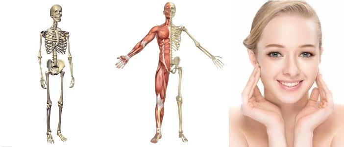
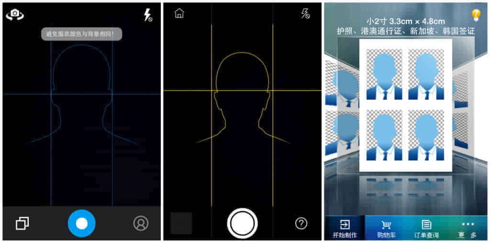

Now the APPs on our phones have become a part of our lives. Having played with many, we increasingly discover that an APP is also a living thing with bones, flesh, and skin. Many people talk about experience and feel, but what exactly makes an APP good or bad? What causes this difference in feeling? And how should we design APPs?
Below, I will analyze three representative ID photo APPs: "Smart ID Photo", "Most Beautiful ID Photo", and "ID Photo", using three dimensions. ID photo APPs mainly use the phone at hand to take and produce ID photos, solving problems such as users being unable to control the ID photo in traditional photo studios and the trouble of having to go out and search for a photo studio. This is a tool-type application, so there is a high demand for actually and efficiently solving user problems. Therefore, we dissect these APPs deeply, examining them from three dimensions: bone, flesh, and skin.

I. Bone Structure
As the saying goes, "In painting a tiger, you can paint its skin but not its bones." The most fundamental thing about an APP is its logical framework structure. This is like the steel frame of a house, supporting the entire building. The stronger its structure, the more functions the house can carry. For example, with different framework cores below, the houses that can be built are also different:

So let us take a look at what their bone structures are actually like.
The logical framework of "Smart ID Photo" looks uniform and symmetrical overall. The more stable an APP's structure is, the more natural it becomes to extend functions and add bricks upon it. From the very first shooting page to the final completion of ID photo creation, the entire process has almost no redundant operations, making user operations smooth and effortless, like drinking water in one breath.

The overall structure of "Most Beautiful ID Photo" also looks quite smooth and fluent, but when you look closely, it commits many common APP design flaws: incompleteness and tangled joints. First, look at the initial page: Create and Orders. The most used feature is the shooting/creation function, while the Orders option at the bottom is almost never used. When users click it, they find it leads nowhere and immediately return. This huge contrast in usage frequency makes the Orders branch as useless as a missing leg. It not only creates redundancy and structural imbalance, but also exposes the weakness of the functions layered on top of the structure. So this part should be deleted! It should go directly to the shooting page at the very beginning. Next, look at the prominent APP album and export features at the top. After careful analysis, it can be seen that "Most Beautiful ID Photo" has no local photo upload and beautification function. Its built-in album is based on photos saved internally after users take shots, which creates logical confusion. Perfectionist users will think this feature is a bug.
Also, its photos are saved in the internal APP album rather than the phone album. Users have to go through many paths and choose export to actually save the photo, just like tangled joints that cannot stretch properly.
Uploading from the local album should be a very simple thing, so why does "Most Beautiful ID Photo" not directly add the structure of uploading local photos? We will leave this to the flesh section below and analyze it together with "Smart ID Photo".

Overall, we can see at a glance that "ID Photo" has a complicated and cumbersome structure. It looks filled with a lot of content, but actual experience reveals that many functions are weak, committing the flaw of being puffy and hollow. Old man Jobs once said: "Simple can be harder than complex." For complexity, there are still many things we need to delete. Next, let us look at the dashed arrows in the manual cropping section. When users return after poor whitening, background replacement, or clothing change, they are always jumped to the manual cropping module rather than taking an orderly one-step-back return. This shows that the goto jump statement in its program is abused (Note: if the goto statement is used poorly, it is easy, like Jiu Mozhi failing to learn the skill and ending up with reversed meridians). This is a sign of insufficient technical capability, and it is also the source of the design philosophy that eventually guides users, under pressure, into the backend manual PS mode. Let us look further at a contradiction between APP structure design and actual function presentation: at the very beginning, it takes the path of selecting the ID photo type, and different ID photos have different standard requirements. However, later when changing the background, it freely provides various background colors. If users have no relevant concept, the result will be that the ID photo does not meet the requirements. This is a case of forgetting the original intention in later flesh design, growing bones against the original direction, and planting pathogenic genes.
In ancient times, the blind told fortunes by feeling bones; today, scientists possess skull reconstruction techniques. Through the above bone structure analysis, purely from the logical framework diagrams, are they similar to the structures below?

II. Flesh
Obviously, a skeleton alone cannot make a complete person. If a person wants to run, various muscles must coordinate and cooperate to form explosive power and drive the operation of a system.
ID photo APPs mainly solve the problem of users conveniently making ID photos, lowering the professional threshold of photography, getting rid of the background screens of photo studios, avoiding manual PS processing, and shortening the path users have to walk. Its core muscle groups should be able to accomplish functions such as easy shooting, automatic background replacement, intelligent beautification, size cropping, and so on. So let us continue to analyze their flesh.

Whose chicken has dense meat texture, crispy on the outside and tender on the inside, full of chewiness, and rich in ATP? Everyone has their own opinion, and I will not make too many judgments here. Fortunately, utility APPs are technical work; you need the diamond drill to dare to put it on the table. So I will break through from the externally visible structure and find some clues. We mainly analyze the APP design from the core function of background replacement. The following are the effects after automatic background replacement without fine-tuning adjustment:

"Smart ID Photo" "Most Beautiful ID Photo" "ID Photo"
From the muscle mass, "Smart ID Photo" has two major functions: one-touch intelligent background replacement and manual fine-tuning; "Most Beautiful ID Photo" has a background replacement function but cannot manually fine-tune; "ID Photo" has automatic cutout and manual fine-tuning functions. From the effect of muscle work, "Smart ID Photo" handles details better after background replacement, and the image is relatively smooth, with only local subtle areas needing improvement; "Most Beautiful ID Photo" still needs improvement in background replacement. Also, because manual fine-tuning is not possible, if flaws remain in the background replacement, it will not meet the requirements of standard ID photos, and the user experience will be greatly reduced; "ID Photo" has acceptable background replacement, but the image processing is not smooth. From the efficiency of muscle work, although "Smart ID Photo" has stronger background replacement technology, its background replacement takes longer, the fine-tuning brush is smaller, and the image cannot be enlarged, making the user experience somewhat laborious. This design actually restricts the performance of its technology. If such small flesh-level functional designs are not closely coordinated with its bone-level structural design, it is easy to cause poor operation and form blood clots. "Most Beautiful ID Photo" takes a little longer for background replacement; "ID Photo" has faster background replacement and cutout speed, but it uses click-style fine-tuning rather than brush-like smearing. This will be very laborious in later fine detail adjustment and will affect image quality. From the coordination of muscles, "Smart ID Photo" adds a shooting environment rating before the background replacement function. This effectively blocks and filters out some low-quality photos, making the final photo processing more efficient. APP design is not a simple stacking of functions; they all serve to solve the core problem. This is why the coordination between surrounding muscle groups and core muscle groups not only produces powerful explosive force, but also reflects more delicate humanistic care.
Regarding the question left at the beginning, why does "Most Beautiful ID Photo" not have an image upload function? We can see the following problems:
When users upload images to process and make ID photos, the images from outside the system are mixed and uncontrollable, unlike the standardized images generated within the system. In the background replacement step, the system can automatically identify and replace the background of the image. This obviously has very high requirements for technology. So how do they design to solve this problem? "Smart ID Photo" filters uploaded images according to standards, and those that do not meet the standards are killed; "Most Beautiful ID Photo" is more violent, revering the king and expelling the barbarians, boycotting all foreign goods; "ID Photo" is quite clever—it completely opens its arms and provides a movable frame for manual cropping. But every solution creates new problems. "Smart ID Photo" s semi-open policy has not handled some fish that slipped through the net. After some images are uploaded, there are gaps with the image frame, which makes perfectionist users think it is a system bug and damages its reputation. "Most Beautiful ID Photo" s fully closed design, however, adds an APP album function at the very beginning, causing structural logical contradictions and distorted bone structure. "ID Photo" s manual cropping is good, but manual control has no corresponding standards, resulting in subsequent problems with photo size cropping and image clarity. If this part is optimized and combined with sliding fine-tuning, the effect will be better. Although they adopt different solutions for image upload, some may think that users generally take photos themselves to make ID photos, so this image upload function is not very useful and is a chicken rib. But when we design the flesh, have we considered who our users are? Are review analysts like us, who do not dare to post our own photos, vegetarians? If you do not feed us good meat, I will make it unpleasant for you.
Therefore, in the design of the flesh, not only must the internal functional muscles form a core cohesion, but coordination with the underlying bone structure design must also be considered to achieve a cooperative game equilibrium.
III. Skin
Although we have conducted an internal system analysis above, this society is one that values faces and fathers. Without skin, it is impossible to survive in the APP world. According to APPfigures, by 2014 the total number of iOS applications in the App Store had reached 1.21 million. For an APP to survive in the world, it needs too many external qualities: UI design, UX design, name, tags, word-of-mouth in social circles, and so on. Below, we analyze from the aspects of UI and UX design.

"Smart ID Photo" "Most Beautiful ID Photo" "ID Photo"
From a UI perspective, the home page of "Smart ID Photo" is clean and tidy; the shooting page of "Most Beautiful ID Photo" is also quite clean, but on careful inspection, the bottom menu bar and the shooting area are both black, and the transition between functional areas is not obvious. There is a principle in Gestalt psychology: when objects are too close, we tend to think they are related. This kind of design easily causes visual confusion; the home page of "ID Photo" is grayish cyan, giving a gloomy feeling. At the same time, the cluttered text and images greatly reduce aesthetics. From a UX perspective, "Smart ID Photo" gives dynamic shooting tips. This not only does not affect the overall layout of the page, but also gives people an intuitive, warm sense of affinity; "Most Beautiful ID Photo" puts shooting tips into the bottom menu bar, increasing user interaction costs; in "ID Photo", after clicking the shooting tip in the upper-right corner, the content is only one line: "2-inch is mainly used for passports." The tip is too rough and almost valueless.
This also tells us that in UX and icon design, the distance between you and the user is either a friendly face-to-face exchange or a mechanical, unfamiliar knock on the door. If there is no surprise inside the door, it will inevitably cause regret.
It seems the design of "Smart ID Photo" is pretty good, but don't celebrate too soon—we often don't make mistakes in the daytime, but we mess up on cloudy days.
The mainstream phone screen ratio is now 16:9, i.e., 1.78; the 2-inch ID photo ratio is 1.34. What are these numbers close to? The great golden ratio! But from the background replacement page, it can be seen that the upper blue area and the lower white menu bar area are clearly out of proportion, with a measured ratio of 2.52. A better approach is to have the bottom menu bar in the UI design float, or allow the image to be displayed in a larger view, giving a strong visual impact. Looking at UX again, "Smart ID Photo" uses facial recognition algorithms to automatically replace the background of photos, which certainly takes time to process. However, according to a survey by Compuware, 5 seconds is the longest waiting time users can tolerate for a web page to load, and 50% of users will give up beyond this time. This can also serve as a reference for an app's processing speed.
If an app can make users feel like they are in love, then this point can be ignored. But what hurts the most is that "Smart ID Photo" gives this line of text in its UX: "This will take a while." It's like I'm silently waiting for a bus by the roadside, when suddenly someone next to me reminds me: "The bus is really slow." At that moment, I'm awakened and become more aware of the slowness, so I reply, "Yeah, it's really slow."

People have six sense contacts, and they are always experiencing a product. An app experience is like a matchmaking meeting; have you moved your users? Design is a profound subject, and I'm too shallow in it, so I won't analyze further.
All of the above is based on testing the iOS version. From bone, flesh, and skin appearance, every app has its life and soul. Above this organism, we cannot unilaterally create a life; it needs more thinking to achieve a balance of life.
Source: http://www.woshipm.com/pd/178927.html
Click me to share notes
<p style="font-size:14px;">The note needs to be an extension of this article's content!</p><br> <p style="font-size:12px;"><a href="../tougao.html" target="_blank">Article submission, click here</a></p> <p style="font-size:14px;"><a href="./runoob-user-test-intro.html" target="_blank">How to get a registration invitation code</a></p> <h3 class="text-muted"><i class="fa fa-info-circle" aria-hidden="true"></i> You must <a href=".." class="runoob-pop">log in</a> before sharing notes!</h3> <p><a href="./runoob-user-test-intro.html" target="_blank">How to get a registration invitation code</a></p>